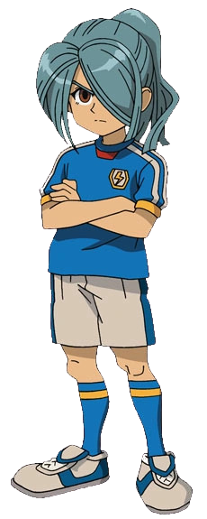

NATHAN SWIFT
{% for item in statistiche_4 %}
Squadra: {{ item[0] }}
Posizione: {{ item[1] }}
Elemento: {{ item[2] }}
Tiro: {{ item[3] }}
Fisico: {{ item[4] }}
Controllo: {{ item[5] }}
Difesa: {{ item[6] }}
Velocità: {{ item[7] }}
Stamina: {{ item[8] }}
Determinazione: {{ item[9] }}
Prima mossa: {{ item[10] }}
Seconda mossa: {{ item[11] }}
Terza mossa: {{ item[12] }}
Quarta mossa:{{ item[13] }}
{% endfor %}
BIOGRAFIA
Nathan Swift (風丸 一郎太 Kazemaru Ichirōta),
è un ragazzo che frequenta la Raimon Junior High School.
Prima faceva parte della squadra di atletica,
poi Mark lo ha convinto a unirsi a quella di calcio.
È un difensore e centrocampista con la maglia numero 2 nella Raimon e
nell'Inazuma Japan e attaccante e capitano nei Dark Emperors.
Dopo la prima partita contro la Genesis (persa 20-0 dalla Raimon) lascia momentaneamente la squadra,
per poi tradirla, sotto effetto della pietra di Alius,
per unirsi ad una squadra di calcio formata da gli ex-membri della squadra,
i Dark Emperors, ma alla fine tutto tornerà alla normalità.
Nella serie GO, 10 anni dopo il FFI, continuerà a giocare a calcio nella lega professionisti.